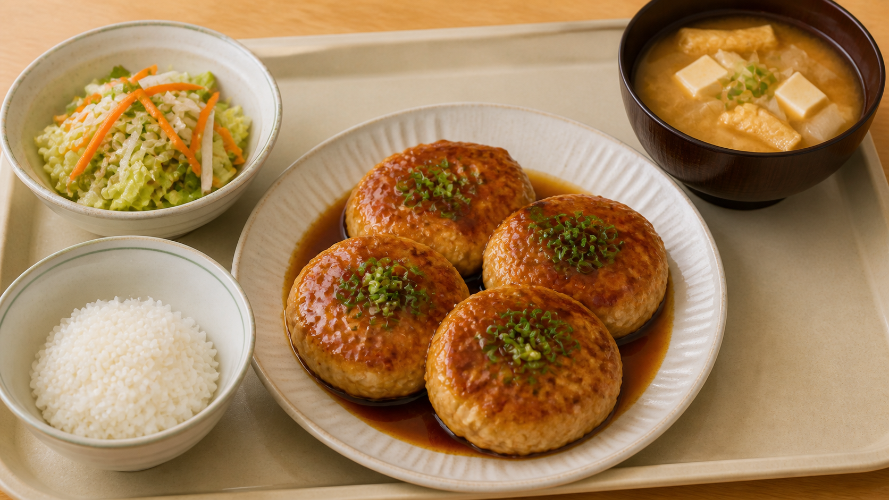
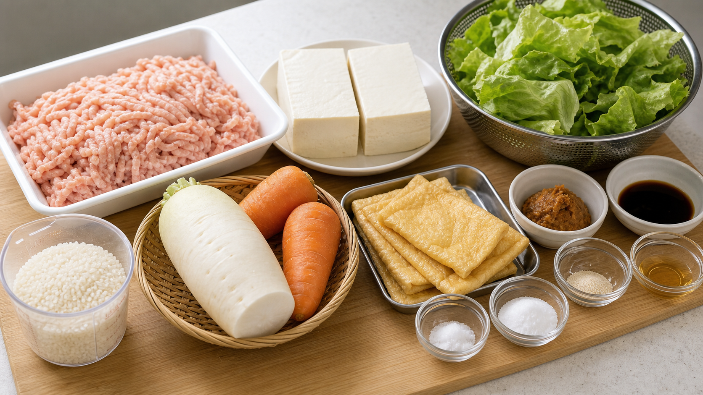

01 / Cover
米1合でも満足できる
体育会系大学生向けランチセット
豆腐入り大判つくね定食
ご飯量に頼らず、大判つくね・副菜・具だくさん味噌汁で昼食として成立させる学食定食。
4人前
2,200円以内
1人545円
揚げ物なし
たんぱく質重視
米1合対応

02 / Conditions
今回の課題条件
自由に足す献立ではなく、人数・予算・米量・材料条件の中で成立させる企画。
4人前
ランチセットとして4人分で設計する。
追加食材なし
使える材料と調味料の中で調整する。
昼食として成立
満足感・ボリューム感・食べやすさを両立する。
費用込み
調味料費と水道光熱費も予算内に含める。
03 / Persona
想定ターゲット
金欠で運動量が多く、たんぱく質と満腹感を欲しい体育会系大学生。
18歳・大学1年生
身長178cm / 体重68kg / サッカー部
- 学食利用が多い
- 金欠
- 運動後にお腹いっぱいになりたい
- たんぱく質を取りたい
- 栄養は気になるが、考えるのは面倒
- 揚げ物は避けたい
- 予算は抑えたい
- 545円でも納得できる量感
- 部活前後でも食べやすい和風定食
- 肉・豆腐・野菜・汁物のバランス
04 / Changes
条件変更で起きた課題
米と予算が厳しくなったため、ご飯量ではなく定食全体で満足感を作る。
- 米2合
- 予算3,000円以内
- 野菜キャベツ使用想定
制約に合わせて再設計
- 米1合
- 予算2,200円以内
- 野菜レタス代替
ご飯で満腹にする作戦は使えない。
主菜・副菜・味噌汁で補う設計に切り替える。
05 / Concept
ご飯量に頼らない定食設計
米1合でも、主菜・副菜・味噌汁の役割を分けて満足感を作る。
ご飯量に頼らない
揚げ物なし
部活前後でも食べやすい
06 / Menu
最終献立
主菜・副菜・汁物・主食がそろった、現実的な学食定食。
鶏ひき肉と豆腐で、たんぱく質と食べ応えを確保する。
野菜量、さっぱり感、見た目のボリュームを補う。
米不足を補う満腹感と、たんぱく質補助を担う。
主食として最低限添え、定食として成立させる。
07 / Materials
材料配分
鶏ひき肉600g以上を守りながら、主菜・副菜・味噌汁へ役割ごとに分ける。

鶏ひき肉650g
豆腐2丁
米1合
レタス副菜に使用
油揚げ味噌汁に使用
卵使用しない
鶏ひき肉650g、豆腐1丁、玉ねぎ2個、にんじん1/2本、調味料
レタス1/2〜1玉、大根1/2本、にんじん1本、ポン酢など
豆腐1丁、油揚げ4枚、大根1/2本、調味料
米1合
卵。使い切り目的で無理に入れない。
08 / Budget
固定予算
調味料・水道光熱費込みで、合計2,180円、1人545円に収める。
使用 2,180円
上限 2,200円
項目
金額
鶏ひき肉650g830円
米1合90円
絹豆腐2丁200円
玉ねぎ2個120円
にんじん2本120円
大根1本180円
レタス1/2〜1玉180円
油揚げ4枚120円
調味料220円
水道光熱費120円
合計2,180円
1人あたり545円
09 / Review
AI大学生による仮試食
AIペルソナによる仮評価。米は少ないが、価格・たんぱく質・揚げ物なしの点で合う。
ご飯は少なめだけど、つくねが大きいからメインを食べた感じはある。
味噌汁に豆腐と油揚げが入っているのは助かる。
運動後なら本音ではご飯はもう少し欲しい。
でも545円ならかなりあり。
揚げ物じゃないから部活前後でも食べやすい。
AIペルソナによる仮評価
1人545円なら金欠学生向けに強い
鶏ひき肉650g＋豆腐＋油揚げで補える
米は少ないが、つくねと味噌汁で補える
揚げ物ではなく、部活前後でも食べやすい
肉・豆腐・野菜・味噌汁で説明しやすい
運動後の空腹には米1合が少なく見える
10 / Decision
採用理由と次工程
採用
豆腐入り大判つくね定食
米1合・固定予算2,180円の中で、主菜・副菜・味噌汁が役割を分けられる案。
米1合では主食依存が弱いため不採用。
和風定食の軸から外れるため不採用。
無理に使わない。今回は使用しない。
ターゲット条件に合わないため不採用。
限られた米と予算の中で、主菜・副菜・味噌汁の役割を分け、体育会系学生が選びやすい現実的な学食定食としてまとめた。